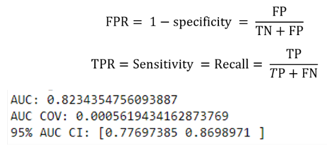
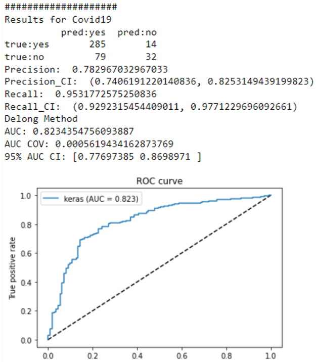

ML Assessment
assessment.uncertainty module
Title: ValidPath Toolbox - Uncertainty Analysis module
Description: This is the Uncertainty Analysis module of the ValidPath toolbox. It is includes Uncertainty_Analysis class and several methods
Classes: Uncertainty_Analysis
Methods: get_report, auc_keras_, ci_, Delong_CI, compute_midrank, compute_midrank_weight, calc_pvalue, compute_ground_truth_statistics, delong_roc_variance, bootstrapping
- class assessment.uncertainty.Uncertainty_Analysis[source]
Bases:
object- Delong_CI(y_pred, y_truth)[source]
A Python implementation of an algorithm for computing the statistical significance of comparing two sets of predictions by ROC AUC. Also can compute variance of a single ROC AUC estimate. X. Sun and W. Xu, “Fast Implementation of DeLong’s Algorithm for Comparing the Areas Under Correlated Receiver Operating Characteristic Curves,” in IEEE Signal Processing Letters, vol. 21, no. 11, pp. 1389-1393, Nov. 2014, doi: 10.1109/LSP.2014.2337313.
- Parameters
y_truth: ground_truth - np.array of 0 and 1 y_pred: predictions - np.array of floats of the probability of being class 1
- Returns
auc, ci, lower_upper_q, auc_cov, auc_std
- auc_keras_(fpr_keras, tpr_keras)[source]
Estimates confidence interval for Bernoulli p
- Parameters
fpr_keras: False Positive Rate Values tpr_keras: True Positive Rate Values
- Returns
AUC: Area Under the ROC Curve
- bootstrapping(y_true, y_pred)[source]
Computes ROC AUC variance for a single set of predictions
- Parameters
ground_truth: np.array of 0 and 1 predictions: np.array of floats of the probability of being class 1
- calc_pvalue(aucs, sigma)[source]
Computes log(10) of p-values.
- Parameters
aucs: 1D array of AUCs sigma: AUC DeLong covariances
- Returns
log10(pvalue)
- ci_(tp, n, alpha=0.05)[source]
Estimates confidence interval for Bernoulli p
- Parameters
tp: number of positive outcomes, TP in this case n: number of attemps, TP+FP for Precision, TP+FN for Recall alpha: confidence level
- Returns
Tuple[float, float]: lower and upper bounds of the confidence interval
- compute_midrank(x)[source]
Computes midranks.
- Parameters
x - a 1D numpy array
- Returns
array of midranks
- compute_midrank_weight(x, sample_weight)[source]
Computes midranks.
- Parameters
x - a 1D numpy array
- Returns
array of midranks
- delong_roc_variance(ground_truth, predictions, sample_weight=None)[source]
Computes ROC AUC variance for a single set of predictions
- Parameters
ground_truth: np.array of 0 and 1 predictions: np.array of floats of the probability of being class 1
- fastDeLong_no_weights(predictions_sorted_transposed, label_1_count)[source]
The fast version of DeLong’s method for computing the covariance of unadjusted AUC.
- Parameters
- predictions_sorted_transposed: a 2D numpy.array[n_classifiers, n_examples]
sorted such as the examples with label “1” are first
- Returns
(AUC value, DeLong covariance)
- Reference:
- @article{sun2014fast,
title={Fast Implementation of DeLong’s Algorithm for Comparing the Areas Under Correlated Receiver Oerating Characteristic Curves}, author={Xu Sun and Weichao Xu}, journal={IEEE Signal Processing Letters}, volume={21}, number={11}, pages={1389–1393}, year={2014}, publisher={IEEE}
}
- fastDeLong_weights(predictions_sorted_transposed, label_1_count, sample_weight)[source]
The fast version of DeLong’s method for computing the covariance of unadjusted AUC.
- Parameters
- predictions_sorted_transposed: a 2D numpy.array[n_classifiers, n_examples]
sorted such as the examples with label “1” are first
- Returns
(AUC value, DeLong covariance)
- Reference
- @article{sun2014fast,
title={Fast Implementation of DeLong’s Algorithm for Comparing the Areas Under Correlated Receiver Oerating Characteristic Curves}, author={Xu Sun and Weichao Xu}, journal={IEEE Signal Processing Letters}, volume={21}, number={11}, pages={1389–1393}, year={2014}, publisher={IEEE}
}
- get_report(y_pred, y_truth)[source]
This method recieve the machine learning prediction output and the ground truth and report several metrics. This is the main metod of the Uncertainty_Analysis class which calls other methods to procude results.
- Parameters
y_truth: ground_truth - np.array of 0 and 1 y_pred: predictions - np.array of floats of the probability of being class 1
- Returns
precision Precision Conficenc Interval Recall Recall Conficenc Interval AUC based on delong method and its Conficenc Interval and COV False Positive Rate True Positive Rate AUC Confusion Matrix
About this module
This demonstration guides you through the process of using ValidPath to for performance evaluation of ML models. This is enabled using the get_report method of the UncertaintyAnalysis class in the ValidPath. The input to this method are the probability results of the ML model as well as the truth values. The output of this method include:
Confusion Matrix
{kind=link}
For the confidence interval calculation, we first define J= TP/(TP+FN+FP) , and computed its 95% CI [JL, JU] based on the binomial distribution. Then because F1= 2J/(1+J) , the 95% CI of F1 is [2JL/(1+JL), 2JU/(1+JU)].
Loading Required Packages
This step involves importing various Python modules that are needed for our analysis.
import numpy as np
import pandas as pd
from assessment.uncertainty import Uncertainty_Analysis
UncertaintyAnalysis = Uncertainty_Analysis()
Generate Results
Having the output of the binary classification results, we can now generate the performance results. In order to generate the annotation files, we can use the get_report method of the UncertaintyAnalysis class.
UncertaintyAnalysis. get_report(y_pred , y_truth) → Array
Receive the classification probabilities and the truth and generate the results.
Parameters:
y_pred (arr) – prediction results (probabilities)
y_truth (arr) – truth
Returns:
Array – the classification report
You can run the following code to generate classification report:
import numpy as np
import pandas as pd
from assessment.uncertainty import Uncertainty_Analysis
UncertaintyAnalysis = Uncertainty_Analysis()
xls_file = "C:/Results/ResultsExample.xlsx"
UncertaintyAnalysis.perform_Bootstrap= True
UncertaintyAnalysis.plot_roc= True
UncertaintyAnalysis.perform_Delong= True
UncertaintyAnalysis.tag = “TEST”
#loading file tnto dataframe
df = pd.read_excel(xls_file)
#define two list to save values
y_pred=[]
y_truth= []
#extraction columns values
for i in df.values:
y_truth.append(i[0])
y_pred.append(i[1])
#convert list to ndarray
y_pred = np.array(y_pred)
y_truth = np.array(y_truth)
Results = UncertaintyAnalysis.get_report(y_pred , y_truth)
After running the code and provide the input data, you will see the performance report like the following:
{kind=link}